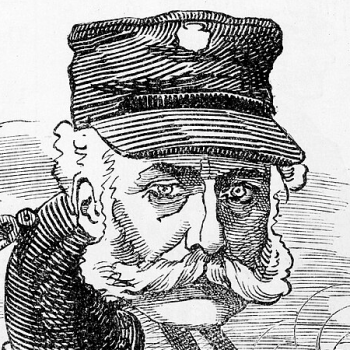

The Relief of Safe Relief
Welcome to the wonderful, winding world of London's contemporary sewer system! This website is designed to offer a taste of the very best bits of this often-underappreciated history. Waste management and clean water are two of the most important things for a healthy society - and those of us who have these things so often take them for granted. Even in 2026, over two billion people don't have safe and consistent access to clean drinking water. The city of London, England (pop. 9.1 million), has a robust sewer system for waste disposal and filtration to ensure the city has clean running water. However, it wasn't always this way! Like so many other things, these systems were built of the blood and bones of those who had to die before it was accepted as a solution. There are three main elements to discuss here:
- Civil engineer Joseph Bazalgette
- The sewer system itself
- All the diseases they helped prevent
Joseph Bazalgette

What K-POP fans might colloquially call my "bias" - Joseph William Bazalgette! The British civil engineer behind one of the greatest undertakings of 19th century London. He certainly makes my personal "top 3 English men" of all time", up there with the likes of Idris Elba and William Shakespeare. While the sewers may not be as glamourous as the stage, his impact is no less significant.Learn more?
Sewer Construction
Considered one of the wonders of the industrial world at a time of overwhelming industrial revolution, the roots of London's sewer system are still in use to this very day! While they've gotten a bit of a facelift over the years, the bones of Bazalgette's big project are still the foundation on which London's sanitaiton is built. Learn more?
Preventable Diseases
Nobody likes to get sick, of course. Modern medicine and epidemiology give us a significant leg up in combatting the spread of illnesses now that we understand better HOW they spread, even if it feels like this has backslid significantly at times. It wasn't always this way, though - people had even less idea of how these things spread, and cautionary measures just hadn't been developed to the same extent. Learn more?